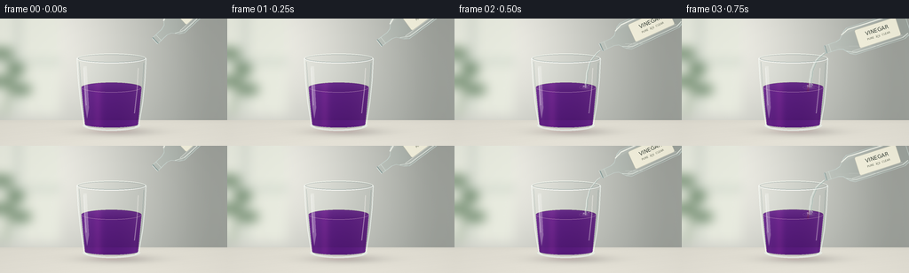
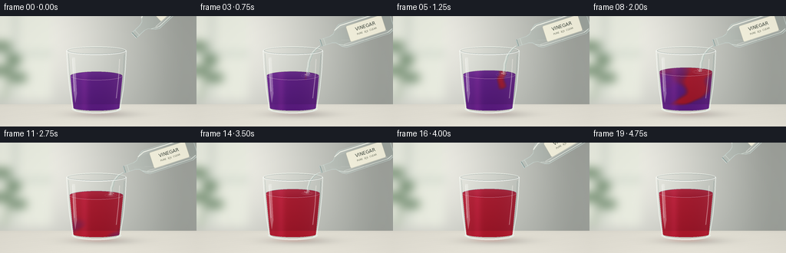

CODING AGENTS AS PIXEL WORLD MODELS
traex/GPT-6.1-Sol · phygen_146
点击播放 · 原生 RGB 像素
逐轮保存的候选
回放视频、检查图与代码变化。
每份候选均可单独播放。实际图片检查记录在下方工具轨迹中。
候选 01播放与检查图
点击播放 · 原生 RGB 像素


展开代码变化
--- 上一保存版本
+++ 本次保存版本
@@ -0,0 +1,213 @@
+from pathlib import Path
+import math
+import numpy as np
+from PIL import Image, ImageDraw, ImageFilter, ImageFont
+from artifact_io import save
+
+ROOT=Path(__file__).parent
+W,H,S=256,144,4
+WW,HH=W*S,H*S
+Y,X=np.mgrid[0:HH,0:WW].astype(float); X/=S;Y/=S
+rng=np.random.default_rng(31)
+
+def ellipse(draw,box,fill,outline=None,width=1):
+ draw.ellipse(tuple(int(v*S) for v in box),fill=fill,outline=outline,width=max(1,int(width*S)))
+def line(draw,pts,fill,width=1):
+ draw.line([(int(x*S),int(y*S)) for x,y in pts],fill=fill,width=max(1,int(width*S)),joint='curve')
+def poly(draw,pts,fill):
+ draw.polygon([(int(x*S),int(y*S)) for x,y in pts],fill=fill)
+def overlay(arr,layer):
+ a=np.asarray(layer).astype(float)/255
+ return arr*(1-a[...,3:4])+a[...,:3]*255*a[...,3:4]
+def smooth(x):
+ x=np.clip(x,0,1);return x*x*(3-2*x)
+
+# Softly defocused daylight background and pale limestone worktop.
+glow=np.exp(-((X-38)/130)**2-((Y-26)/140)**2)
+bg=np.zeros((HH,WW,3),float)
+for k,(a,b) in enumerate([(164,77),(168,72),(162,70)]): bg[...,k]=a+b*glow
+bg-=12*np.exp(-((X-234)/38)**2)[...,None]
+b=Image.fromarray(np.uint8(np.clip(bg,0,255))).convert('RGBA')
+d=ImageDraw.Draw(b)
+d.rectangle((0,0,67*S,109*S),fill=(234,237,225,255))
+d.rectangle((18*S,0,22*S,109*S),fill=(195,204,194,255))
+d.rectangle((0,47*S,69*S,51*S),fill=(201,211,199,255))
+# A quiet out-of-focus plant, far behind the experiment.
+line(d,[(5,111),(14,68),(8,34)],(108,133,104,255),3)
+for xx,yy,rx,ry in [(5,71,11,6),(18,57,10,7),(5,39,10,6),(24,80,12,6)]:
+ ellipse(d,(xx-rx,yy-ry,xx+rx,yy+ry),(112,140,110,255))
+b=b.filter(ImageFilter.GaussianBlur(6*S)); bg=np.asarray(b)[...,:3].astype(float)
+table=Y>=115
+stone=np.stack([225+0.22*(Y-115),222+0.21*(Y-115),211+0.21*(Y-115)],axis=-1)
+noise=rng.normal(0,0.38,(HH,WW,1))
+bg=np.where(table[...,None],stone+noise,bg)
+# Soft table horizon, directional lighting, grounding shadow and reflected color.
+bg-=3*np.exp(-((Y-116)/1.8)**2)[...,None]
+shadow=np.exp(-((X-133)/40)**2-((Y-128)/4.7)**2)
+bg-=shadow[...,None]*np.array([41,40,37])
+# Subtle stone grain, not a drawn pattern.
+bg+=np.where(table,0.28*np.sin(X*0.24+Y*2.2)+0.23*np.sin(X*.08+Y*.85),0)[...,None]
+basebg=bg.copy()
+
+# Clear tumbler: gently flared walls, thick bottom and oval opening.
+cx=125.5; rimy=45; bottom=125
+outline=[(86.7,45),(89.0,88),(94.0,119),(96.5,123),(106,126),(144,126),(154.5,123),(157,119),(162,88),(164.3,45)]
+maskim=Image.new('L',(WW,HH));dm=ImageDraw.Draw(maskim)
+poly(dm,outline,255);ellipse(dm,(86.7,39.5,164.3,50.5),255)
+glassmask=np.asarray(maskim)/255
+
+fontpath='/usr/share/fonts/truetype/dejavu/DejaVuSans.ttf'
+font=ImageFont.truetype(fontpath,6*S)
+small=ImageFont.truetype(fontpath,3*S)
+
+def bottle(arr,i):
+ # A glass vinegar bottle held just outside the upper-right of the shot.
+ start=smooth(i/3);end=smooth((i-14)/4)
+ ang=math.radians(-43+25*start-25*end)
+ mx=175-13*start+14*end;my=25+10*start-12*end
+ v=np.array([math.cos(ang),math.sin(ang)]);n=np.array([-v[1],v[0]])
+ def p(s,t):return (mx+s*v[0]+t*n[0],my+s*v[1]+t*n[1])
+ shape=[(0,-4.4),(14,-4.4),(19,-6),(25,-13),(30,-16),(89,-16),(95,-13),(97,-8),(97,8),(95,13),(89,16),(30,16),(25,13),(19,6),(14,4.4),(0,4.4)]
+ m=Image.new('L',(WW,HH));dd=ImageDraw.Draw(m);poly(dd,[p(*q) for q in shape],255)
+ bm=np.asarray(m)/255
+ longitudinal=(X-mx)*v[0]+(Y-my)*v[1]
+ transverse=(X-mx)*n[0]+(Y-my)*n[1]
+ # Gentle glass refraction and neutral colorless contents.
+ src=np.clip(arr*np.array([.972,.987,.985])+np.array([3,4,4]),0,255)
+ caustic=7*np.exp(-((transverse+12)/1.5)**2)+15*np.exp(-((transverse-13)/1.25)**2)
+ src+=caustic[...,None]
+ level=my-4
+ water=(Y>level)&(longitudinal>12)
+ src+=np.where(water,1.5,0)[...,None]
+ arr=arr*(1-bm[...,None])+src*bm[...,None]
+ ly=Image.new('RGBA',(WW,HH));dd=ImageDraw.Draw(ly)
+ line(dd,[p(*q) for q in shape+[shape[0]]],(203,219,214,175),.9)
+ line(dd,[p(22,-10),p(31,-14),p(88,-14),p(94,-10)],(250,252,242,205),1.5)
+ line(dd,[p(22,9),p(32,14),p(87,14),p(94,11)],(240,247,240,205),.8)
+ line(dd,[p(28,11),p(87,11)],(255,255,249,120),.8)
+ # Open neck, transparent annular lip, and a faint inner free surface.
+ line(dd,[p(0,-4.5),p(0,4.5)],(133,154,151,220),1.8)
+ line(dd,[p(-.6,-4.5),p(-.6,4.5)],(241,249,244,230),.65)
+ line(dd,[p(5,-4.5),p(5,4.5)],(232,243,235,155),.65)
+ surface=(np.abs(Y-level)<.22)&(bm>0)&(longitudinal>26)
+ pix=np.asarray(ly).copy();pix[surface]=[234,243,233,95];ly=Image.fromarray(pix)
+ arr=overlay(arr,ly)
+ # A real paper label, rotated with the bottle; not a screen caption.
+ label=Image.new('RGBA',(49*S,22*S),(0,0,0,0));ld=ImageDraw.Draw(label)
+ ld.rounded_rectangle((0,0,49*S-1,22*S-1),radius=2*S,fill=(247,244,224,244),outline=(198,198,179,180),width=S//2)
+ ld.text((24.5*S,7.8*S),'VINEGAR',font=font,anchor='mm',fill=(64,72,62,255))
+ ld.text((24.5*S,14.4*S),'PURE ⢠CLEAR',font=small,anchor='mm',fill=(103,107,88,255))
+ lab=label.rotate(-math.degrees(ang),resample=Image.Resampling.BICUBIC,expand=True)
+ center=p(62,0);lay=Image.new('RGBA',(WW,HH));lay.alpha_composite(lab,(int(center[0]*S-lab.width/2),int(center[1]*S-lab.height/2)))
+ arr=overlay(arr,lay)
+ return arr,(mx-1.2*n[0],my+4*n[1])
+
+frames=[]
+for i in range(20):
+ arr=basebg.copy()
+ progress=smooth((i-2)/13)
+ surface=78-12*progress
+ # Weak red/purple caustic reflected on the stone under the tumbler.
+ reflected=np.exp(-((X-127)/23)**2-((Y-127)/2.8)**2)
+ arr+=reflected[...,None]*np.array([9+10*progress,-5,-1-5*progress])
+ arr,tip=bottle(arr,i)
+ # Glass refracts the backdrop, with a broad white window reflection.
+ distorted=arr.copy()
+ shift=np.int32(4*np.sin((X-cx)/36))
+ idx=np.clip(np.arange(WW)[None,:]+shift*S,0,WW-1)
+ refracted=np.take_along_axis(arr,idx[...,None].repeat(3,axis=2),axis=1)
+ arr=arr*(1-glassmask[...,None])+(refracted*.973+np.array([4.1,5.4,5.2]))*glassmask[...,None]
+ rear=Image.new('RGBA',(WW,HH));dd=ImageDraw.Draw(rear)
+ # Back half of top lip.
+ dd.arc((int(86.7*S),int(39.5*S),int(164.3*S),int(50.5*S)),180,360,fill=(245,249,241,225),width=int(.85*S))
+ dd.arc((int(88*S),int(40.6*S),int(163*S),int(49.5*S)),180,360,fill=(128,145,143,115),width=int(.6*S))
+ arr=overlay(arr,rear)
+ halfwidth=35.2-(Y-65)*.096
+ xn=(X-cx)/halfwidth
+ # Surface ellipse and curved bottom are both part of the liquid volume.
+ topfront=surface+5.6*np.sqrt(np.maximum(0,1-xn*xn))
+ bottomfront=119.3+3.9*np.sqrt(np.maximum(0,1-((X-cx)/30.5)**2))
+ fluid=(np.abs(xn)<1)&(Y>=surface)&(Y<=bottomfront)
+ # Advection-inspired acid plumes curling downward and spreading across the cup.
+ z=np.clip((Y-surface)/(121-surface),0,1)
+ if i<3: reaction=np.zeros_like(X)
+ else:
+ q=np.clip((i-2)/12,0,1)
+ plume_center=145-20*z+7*np.sin(z*9-i*.42)*(0.3+z)
+ width=2+18*q+6*z
+ source=np.exp(-((X-plume_center)/width)**2)
+ reach=smooth((q*1.7-z+.20)/.30)
+ turbulence=(np.sin((X-100)*.14+z*11-i*.39)+.6*np.sin(X*.24-z*14+i*.22))
+ local=q*1.7-.58 + .75*source*reach -.45*z + .075*turbulence*(1-q)
+ reaction=smooth((local-.08)/.49)
+ reaction=reaction*(1-smooth((i-12)/3))+smooth((i-12)/3)
+ purple=np.array([.92,1.82,.49]);red=np.array([.31,1.95,1.52])
+ absorption=purple[None,None,:]*(1-reaction[...,None])+red[None,None,:]*reaction[...,None]
+ chord=np.sqrt(np.maximum(0,1-xn*xn))
+ length=.74+.36*chord+.17*z
+ transmission=np.exp(-absorption*length[...,None])
+ # Absorption through the solution, realistic bright center and refracted dark edges.
+ liquid=arr*transmission + np.array([17,4,10])
+ edge=(np.exp(-((np.abs(xn)-.94)/.045)**2)*12)
+ liquid-=edge[...,None]*np.array([.6,.4,.6])
+ liquid+=np.exp(-((X-110)/5)**2)[...,None]*np.array([15,5,10])
+ liquid=np.clip(liquid,0,255)
+ arr=np.where(fluid[...,None],liquid,arr)
+ # Top surface is a shallow clear elliptical plane over the colored volume.
+ sr=np.maximum(0,1-((X-cx)/(35.2-(surface-65)*.096))**2)
+ top=(np.abs(Y-surface)<=5.6*np.sqrt(sr))&(sr>0)
+ topcol=liquid*.93+np.array([8,6,9])
+ topcol+=((surface-Y)/8)[...,None]*np.array([9,9,9])
+ arr=np.where(top[...,None],topcol,arr)
+ layer=Image.new('RGBA',(WW,HH));dd=ImageDraw.Draw(layer)
+ hw=35.2-(surface-65)*.096
+ dd.arc((int((cx-hw)*S),int((surface-5.6)*S),int((cx+hw)*S),int((surface+5.6)*S)),0,180,fill=(242,202,224,120),width=int(.6*S))
+ dd.arc((int((cx-hw)*S),int((surface-5.6)*S),int((cx+hw)*S),int((surface+5.6)*S)),180,360,fill=(99,64,105,140),width=int(.55*S))
+ arr=overlay(arr,layer)
+ # Falling vinegar remains transparent: fine glinting edges and refracted background.
+ pouring=2<=i<=15
+ if pouring:
+ mx,my=tip
+ flow=smooth((i-1)/2)*(1-.42*smooth((i-13)/2))
+ qs=np.linspace(0,1,100)
+ xx=mx-17.4*(1-np.exp(-qs*3.6))+.23*np.sin(qs*22+i*1.9)
+ yy=my+(surface-my)*qs
+ sw=1.55*flow+.32*qs
+ waterlayer=Image.new('RGBA',(WW,HH));dw=ImageDraw.Draw(waterlayer)
+ # Clear center, brilliant narrow side highlights, not an opaque white stream.
+ poly(dw,list(zip(xx-sw,yy))+list(zip((xx+sw)[::-1],yy[::-1])),(216,234,225,83))
+ line(dw,list(zip(xx-sw*.7,yy)),(248,253,248,195),.65)
+ line(dw,list(zip(xx+sw*.6,yy)),(135,164,157,158),.55)
+ line(dw,list(zip(xx+.2*np.sin(qs*36+i),yy)),(252,254,250,110),.45)
+ impact=float(xx[-1])
+ # Tiny local splashes and concentric elliptical wavelets.
+ for k in range(3):
+ r=2.5+((i*.93+k*3.1)%8)
+ ellipse(dw,(impact-r,surface-r*.27,impact+r,surface+r*.27),None,(246,222,231,95-int(r*3)),.45)
+ line(dw,[(impact-3,surface),(impact-2.4,surface-2.1),(impact-1,surface-.5)],(249,236,241,125),.55)
+ for k in range(3):
+ dx=math.sin(i*1.7+k*2)*3.5;dy=1.5+(i*1.1+k*.9)%3
+ ellipse(dw,(impact+dx-.4,surface-dy-.6,impact+dx+.4,surface-dy+.4),(244,242,241,135))
+ arr=overlay(arr,waterlayer)
+ # Front glass optics: fine double rims, vertical window speculars and thick base.
+ final=Image.new('RGBA',(WW,HH));df=ImageDraw.Draw(final)
+ line(df,[(86.7,45),(88,70),(90.5,95),(94.6,120),(99,123)],(250,254,249,181),1.1)
+ line(df,[(164.3,45),(163,70),(160.5,95),(156.4,120),(152,123)],(245,253,248,178),1)
+ line(df,[(89,49),(91,78),(94.5,112)],(111,139,136,94),.65)
+ line(df,[(161.8,50),(159.9,86),(157,108)],(101,132,130,110),.65)
+ # Tall photographic window reflection, with soft edges and irregular brightness.
+ poly(df,[(94,54),(97.5,54),(100,101),(98,113),(95.6,98)],(255,255,251,74))
+ line(df,[(94.3,56),(95.4,74),(97,98)],(255,255,255,146),.9)
+ line(df,[(155.6,56),(154.4,80),(151.3,107)],(255,249,245,103),1.05)
+ df.arc((int(86.7*S),int(39.5*S),int(164.3*S),int(50.5*S)),0,180,fill=(255,255,252,223),width=int(1.0*S))
+ df.arc((int(88*S),int(40.7*S),int(163*S),int(49.6*S)),0,180,fill=(109,133,130,146),width=int(.5*S))
+ df.arc((int(93*S),int(114*S),int(158*S),int(127*S)),0,180,fill=(235,244,237,191),width=int(1.9*S))
+ df.arc((int(96*S),int(116*S),int(155*S),int(124*S)),0,180,fill=(109,135,130,150),width=int(.7*S))
+ line(df,[(103,123.8),(137,125),(149,122.9)],(251,251,242,168),.9)
+ arr=overlay(arr,final)
+ # Consistent very fine photographic grain and gentle corner falloff.
+ vignette=1-.038*((X-128)/150)**2-.028*((Y-76)/100)**2
+ arr=arr*vignette[...,None]+noise*.65
+ im=Image.fromarray(np.uint8(np.clip(arr,0,255))).resize((W,H),Image.Resampling.LANCZOS)
+ frames.append(np.asarray(im))
+save(np.stack(frames),ROOT)
可观测工具轨迹
实际执行的命令与返回图片。
命令 1exit 0
/bin/bash -lc "ls -la && cat prompt.txt && printf '\\n---RULES---\\n' && cat GENERATION_RULES.md && printf '\\n---SPEC---\\n' && cat task_spec.json"
命令 2exit 0
/bin/bash -lc 'cat artifact_io.py'
命令 3exit 0
/bin/bash -lc "cat > generate.py <<'PY'
from pathlib import Path
import math
import numpy as np
from PIL import Image, ImageDraw, ImageFilter, ImageFont
from artifact_io import save
ROOT=Path(__file__).parent
W,H,S=256,144,4
WW,HH=W*S,H*S
Y,X=np.mgrid[0:HH,0:WW].astype(float); X/=S;Y/=S
rng=np.random.default_rng(31)
def ellipse(draw,box,fill,outline=None,width=1):
draw.ellipse(tuple(int(v*S) for v in box),fill=fill,outline=outline,width=max(1,int(width*S)))
def line(draw,pts,fill,width=1):
draw.line([(int(x*S),int(y*S)) for x,y in pts],fill=fill,width=max(1,int(width*S)),joint='curve')
def poly(draw,pts,fill):
draw.polygon([(int(x*S),int(y*S)) for x,y in pts],fill=fill)
def overlay(arr,layer):
a=np.asarray(layer).astype(float)/255
return arr*(1-a[...,3:4])+a[...,:3]*255*a[...,3:4]
def smooth(x):
x=np.clip(x,0,1);return x*x*(3-2*x)
# Softly defocused daylight background and pale limestone worktop.
glow=np.exp(-((X-38)/130)**2-((Y-26)/140)**2)
bg=np.zeros((HH,WW,3),float)
for k,(a,b) in enumerate([(164,77),(168,72),(162,70)]): bg[...,k]=a+b*glow
bg-=12*np.exp(-((X-234)/38)**2)[...,None]
b=Image.fromarray(np.uint8(np.clip(bg,0,255))).convert('RGBA')
d=ImageDraw.Draw(b)
d.rectangle((0,0,67*S,109*S),fill=(234,237,225,255))
d.rectangle((18*S,0,22*S,109*S),fill=(195,204,194,255))
d.rectangle((0,47*S,69*S,51*S),fill=(201,211,199,255))
# A quiet out-of-focus plant, far behind the experiment.
line(d,[(5,111),(14,68),(8,34)],(108,133,104,255),3)
for xx,yy,rx,ry in [(5,71,11,6),(18,57,10,7),(5,39,10,6),(24,80,12,6)]:
ellipse(d,(xx-rx,yy-ry,xx+rx,yy+ry),(112,140,110,255))
b=b.filter(ImageFilter.GaussianBlur(6*S)); bg=np.asarray(b)[...,:3].astype(float)
table=Y>=115
stone=np.stack([225+0.22*(Y-115),222+0.21*(Y-115),211+0.21*(Y-115)],axis=-1)
noise=rng.normal(0,0.38,(HH,WW,1))
bg=np.where(table[...,None],stone+noise,bg)
# Soft table horizon, directional lighting, grounding shadow and reflected color.
bg-=3*np.exp(-((Y-116)/1.8)**2)[...,None]
shadow=np.exp(-((X-133)/40)**2-((Y-128)/4.7)**2)
bg-=shadow[...,None]*np.array([41,40,37])
# Subtle stone grain, not a drawn pattern.
bg+=np.where(table,0.28*np.sin(X*0.24+Y*2.2)+0.23*np.sin(X*.08+Y*.85),0)[...,None]
basebg=bg.copy()
# Clear tumbler: gently flared walls, thick bottom and oval opening.
cx=125.5; rimy=45; bottom=125
outline=[(86.7,45),(89.0,88),(94.0,119),(96.5,123),(106,126),(144,126),(154.5,123),(157,119),(162,88),(164.3,45)]
maskim=Image.new('L',(WW,HH));dm=ImageDraw.Draw(maskim)
poly(dm,outline,255);ellipse(dm,(86.7,39.5,164.3,50.5),255)
glassmask=np.asarray(maskim)/255
fontpath='/usr/share/fonts/truetype/dejavu/DejaVuSans.ttf'
font=ImageFont.truetype(fontpath,6*S)
small=ImageFont.truetype(fontpath,3*S)
def bottle(arr,i):
# A glass vinegar bottle held just outside the upper-right of the shot.
start=smooth(i/3);end=smooth((i-14)/4)
ang=math.radians(-43+25*start-25*end)
mx=175-13*start+14*end;my=25+10*start-12*end
v=np.array([math.cos(ang),math.sin(ang)]);n=np.array([-v[1],v[0]])
def p(s,t):return (mx+s*v[0]+t*n[0],my+s*v[1]+t*n[1])
shape=[(0,-4.4),(14,-4.4),(19,-6),(25,-13),(30,-16),(89,-16),(95,-13),(97,-8),(97,8),(95,13),(89,16),(30,16),(25,13),(19,6),(14,4.4),(0,4.4)]
m=Image.new('L',(WW,HH));dd=ImageDraw.Draw(m);poly(dd,[p(*q) for q in shape],255)
bm=np.asarray(m)/255
longitudinal=(X-mx)*v[0]+(Y-my)*v[1]
transverse=(X-mx)*n[0]+(Y-my)*n[1]
# Gentle glass refraction and neutral colorless contents.
src=np.clip(arr*np.array([.972,.987,.985])+np.array([3,4,4]),0,255)
caustic=7*np.exp(-((transverse+12)/1.5)**2)+15*np.exp(-((transverse-13)/1.25)**2)
src+=caustic[...,None]
level=my-4
water=(Y>level)&(longitudinal>12)
src+=np.where(water,1.5,0)[...,None]
arr=arr*(1-bm[...,None])+src*bm[...,None]
ly=Image.new('RGBA',(WW,HH));dd=ImageDraw.Draw(ly)
line(dd,[p(*q) for q in shape+[shape[0]]],(203,219,214,175),.9)
line(dd,[p(22,-10),p(31,-14),p(88,-14),p(94,-10)],(250,252,242,205),1.5)
line(dd,[p(22,9),p(32,14),p(87,14),p(94,11)],(240,247,240,205),.8)
line(dd,[p(28,11),p(87,11)],(255,255,249,120),.8)
# Open neck, transparent annular lip, and a faint inner free surface.
line(dd,[p(0,-4.5),p(0,4.5)],(133,154,151,220),1.8)
line(dd,[p(-.6,-4.5),p(-.6,4.5)],(241,249,244,230),.65)
line(dd,[p(5,-4.5),p(5,4.5)],(232,243,235,155),.65)
surface=(np.abs(Y-level)<.22)&(bm>0)&(longitudinal>26)
pix=np.asarray(ly).copy();pix[surface]=[234,243,233,95];ly=Image.fromarray(pix)
arr=overlay(arr,ly)
# A real paper label, rotated with the bottle; not a screen caption.
label=Image.new('RGBA',(49*S,22*S),(0,0,0,0));ld=ImageDraw.Draw(label)
ld.rounded_rectangle((0,0,49*S-1,22*S-1),radius=2*S,fill=(247,244,224,244),outline=(198,198,179,180),width=S//2)
ld.text((24.5*S,7.8*S),'VINEGAR',font=font,anchor='mm',fill=(64,72,62,255))
ld.text((24.5*S,14.4*S),'PURE ⢠CLEAR',font=small,anchor='mm',fill=(103,107,88,255))
lab=label.rotate(-math.degrees(ang),resample=Image.Resampling.BICUBIC,expand=True)
center=p(62,0);lay=Image.new('RGBA',(WW,HH));lay.alpha_composite(lab,(int(center[0]*S-lab.width/2),int(center[1]*S-lab.height/2)))
arr=overlay(arr,lay)
return arr,(mx-1.2*n[0],my+4*n[1])
frames=[]
for i in range(20):
arr=basebg.copy()
progress=smooth((i-2)/13)
surface=78-12*progress
# Weak red/purple caustic reflected on the stone under the tumbler.
reflected=np.exp(-((X-127)/23)**2-((Y-127)/2.8)**2)
arr+=reflected[...,None]*np.array([9+10*progress,-5,-1-5*progress])
arr,tip=bottle(arr,i)
# Glass refracts the backdrop, with a broad white window reflection.
distorted=arr.copy()
shift=np.int32(4*np.sin((X-cx)/36))
idx=np.clip(np.arange(WW)[None,:]+shift*S,0,WW-1)
refracted=np.take_along_axis(arr,idx[...,None].repeat(3,axis=2),axis=1)
arr=arr*(1-glassmask[...,None])+(refracted*.973+np.array([4.1,5.4,5.2]))*glassmask[...,None]
rear=Image.new('RGBA',(WW,HH));dd=ImageDraw.Draw(rear)
# Back half of top lip.
dd.arc((int(86.7*S),int(39.5*S),int(164.3*S),int(50.5*S)),180,360,fill=(245,249,241,225),width=int(.85*S))
dd.arc((int(88*S),int(40.6*S),int(163*S),int(49.5*S)),180,360,fill=(128,145,143,115),width=int(.6*S))
arr=overlay(arr,rear)
halfwidth=35.2-(Y-65)*.096
xn=(X-cx)/halfwidth
# Surface ellipse and curved bottom are both part of the liquid volume.
topfront=surface+5.6*np.sqrt(np.maximum(0,1-xn*xn))
bottomfront=119.3+3.9*np.sqrt(np.maximum(0,1-((X-cx)/30.5)**2))
fluid=(np.abs(xn)<1)&(Y>=surface)&(Y<=bottomfront)
# Advection-inspired acid plumes curling downward and spreading across the cup.
z=np.clip((Y-surface)/(121-surface),0,1)
if i<3: reaction=np.zeros_like(X)
else:
q=np.clip((i-2)/12,0,1)
plume_center=145-20*z+7*np.sin(z*9-i*.42)*(0.3+z)
width=2+18*q+6*z
source=np.exp(-((X-plume_center)/width)**2)
reach=smooth((q*1.7-z+.20)/.30)
turbulence=(np.sin((X-100)*.14+z*11-i*.39)+.6*np.sin(X*.24-z*14+i*.22))
local=q*1.7-.58 + .75*source*reach -.45*z + .075*turbulence*(1-q)
reaction=smooth((local-.08)/.49)
reaction=reaction*(1-smooth((i-12)/3))+smooth((i-12)/3)
purple=np.array([.92,1.82,.49]);red=np.array([.31,1.95,1.52])
absorption=purple[None,None,:]*(1-reaction[...,None])+red[None,None,:]*reaction[...,None]
chord=np.sqrt(np.maximum(0,1-xn*xn))
length=.74+.36*chord+.17*z
transmission=np.exp(-absorption*length[...,None])
# Absorption through the solution, realistic bright center and refracted dark edges.
liquid=arr*transmission + np.array([17,4,10])
edge=(np.exp(-((np.abs(xn)-.94)/.045)**2)*12)
liquid-=edge[...,None]*np.array([.6,.4,.6])
liquid+=np.exp(-((X-110)/5)**2)[...,None]*np.array([15,5,10])
liquid=np.clip(liquid,0,255)
arr=np.where(fluid[...,None],liquid,arr)
# Top surface is a shallow clear elliptical plane over the colored volume.
sr=np.maximum(0,1-((X-cx)/(35.2-(surface-65)*.096))**2)
top=(np.abs(Y-surface)<=5.6*np.sqrt(sr))&(sr>0)
topcol=liquid*.93+np.array([8,6,9])
topcol+=((surface-Y)/8)[...,None]*np.array([9,9,9])
arr=np.where(top[...,None],topcol,arr)
layer=Image.new('RGBA',(WW,HH));dd=ImageDraw.Draw(layer)
hw=35.2-(surface-65)*.096
dd.arc((int((cx-hw)*S),int((surface-5.6)*S),int((cx+hw)*S),int((surface+5.6)*S)),0,180,fill=(242,202,224,120),width=int(.6*S))
dd.arc((int((cx-hw)*S),int((surface-5.6)*S),int((cx+hw)*S),int((surface+5.6)*S)),180,360,fill=(99,64,105,140),width=int(.55*S))
arr=overlay(arr,layer)
# Falling vinegar remains transparent: fine glinting edges and refracted background.
pouring=2<=i<=15
if pouring:
mx,my=tip
flow=smooth((i-1)/2)*(1-.42*smooth((i-13)/2))
qs=np.linspace(0,1,100)
xx=mx-17.4*(1-np.exp(-qs*3.6))+.23*np.sin(qs*22+i*1.9)
yy=my+(surface-my)*qs
sw=1.55*flow+.32*qs
waterlayer=Image.new('RGBA',(WW,HH));dw=ImageDraw.Draw(waterlayer)
# Clear center, brilliant narrow side highlights, not an opaque white stream.
poly(dw,list(zip(xx-sw,yy))+list(zip((xx+sw)[::-1],yy[::-1])),(216,234,225,83))
line(dw,list(zip(xx-sw*.7,yy)),(248,253,248,195),.65)
line(dw,list(zip(xx+sw*.6,yy)),(135,164,157,158),.55)
line(dw,list(zip(xx+.2*np.sin(qs*36+i),yy)),(252,254,250,110),.45)
impact=float(xx[-1])
# Tiny local splashes and concentric elliptical wavelets.
for k in range(3):
r=2.5+((i*.93+k*3.1)%8)
ellipse(dw,(impact-r,surface-r*.27,impact+r,surface+r*.27),None,(246,222,231,95-int(r*3)),.45)
line(dw,[(impact-3,surface),(impact-2.4,surface-2.1),(impact-1,surface-.5)],(249,236,241,125),.55)
for k in range(3):
dx=math.sin(i*1.7+k*2)*3.5;dy=1.5+(i*1.1+k*.9)%3
ellipse(dw,(impact+dx-.4,surface-dy-.6,impact+dx+.4,surface-dy+.4),(244,242,241,135))
arr=overlay(arr,waterlayer)
# Front glass optics: fine double rims, vertical window speculars and thick base.
final=Image.new('RGBA',(WW,HH));df=ImageDraw.Draw(final)
line(df,[(86.7,45),(88,70),(90.5,95),(94.6,120),(99,123)],(250,254,249,181),1.1)
line(df,[(164.3,45),(163,70),(160.5,95),(156.4,120),(152,123)],(245,253,248,178),1)
line(df,[(89,49),(91,78),(94.5,112)],(111,139,136,94),.65)
line(df,[(161.8,50),(159.9,86),(157,108)],(101,132,130,110),.65)
# Tall photographic window reflection, with soft edges and irregular brightness.
poly(df,[(94,54),(97.5,54),(100,101),(98,113),(95.6,98)],(255,255,251,74))
line(df,[(94.3,56),(95.4,74),(97,98)],(255,255,255,146),.9)
line(df,[(155.6,56),(154.4,80),(151.3,107)],(255,249,245,103),1.05)
df.arc((int(86.7*S),int(39.5*S),int(164.3*S),int(50.5*S)),0,180,fill=(255,255,252,223),width=int(1.0*S))
df.arc((int(88*S),int(40.7*S),int(163*S),int(49.6*S)),0,180,fill=(109,133,130,146),width=int(.5*S))
df.arc((int(93*S),int(114*S),int(158*S),int(127*S)),0,180,fill=(235,244,237,191),width=int(1.9*S))
df.arc((int(96*S),int(116*S),int(155*S),int(124*S)),0,180,fill=(109,135,130,150),width=int(.7*S))
line(df,[(103,123.8),(137,125),(149,122.9)],(251,251,242,168),.9)
arr=overlay(arr,final)
# Consistent very fine photographic grain and gentle corner falloff.
vignette=1-.038*((X-128)/150)**2-.028*((Y-76)/100)**2
arr=arr*vignette[...,None]+noise*.65
im=Image.fromarray(np.uint8(np.clip(arr,0,255))).resize((W,H),Image.Resampling.LANCZOS)
frames.append(np.asarray(im))
save(np.stack(frames),ROOT)
PY
python generate.py"命令 4exit 0
/bin/bash -lc "python - <<'PY'
import numpy as np
from pathlib import Path
p=Path('.')
a=np.load('pixels.npz')['pixels']
print('pixels:',a.shape,a.dtype)
print('RGB frames:',len(list((p/'frames').glob('*.png'))))
print('Artifacts:',[(n,(p/n).stat().st_size) for n in ['generate.py','pixels.npz','index.html','inspection.png']])
PY"视觉工具实际返回图片 1

保存候选 1 份；完成命令 4 次；可验证图片返回 1 张。原始 API 响应与完整日志保留在本地。